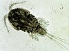

cyclopoida

Definition: The Cyclopoida are an order of small crustaceans from the subclass Copepoda. Like many other copepods, members of Cyclopoida are small, planktonic animals living both in the sea and in freshwater habitats. They are capable of rapid movement. Their larval development is metamorphic, and the embryos are carried in paired or single sacs attached to first abdominal somite.
Source: Wikipedia
Wikipedia Page
Wikidata Page